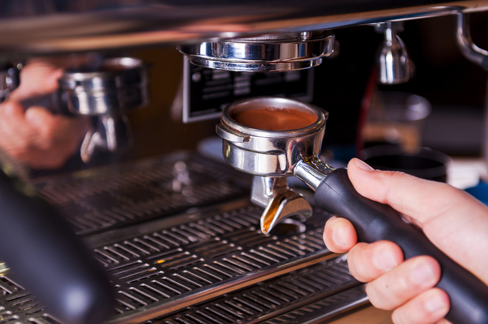

Have you ever been to a specialty coffee shop where all the drinks — and even the sizes of the cups — have weird names? If so, you've probably already seen a barista in action.
A barista is a person who makes espresso-based coffee drinks. Baristas are usually employed by specialty coffee shops.
To be a barista, you have to learn how to make many different types of coffee drinks. You might also need to be a little artistic!
Barista is the Italian word for “bartender." In Italy, baristas serve drinks of all kinds, not just coffee. In the United States, however, the term “barista" is generally only used for those who serve specialty coffee drinks.
Most specialty coffee shops serve coffee drinks based on espresso. Espresso is not a particular coffee bean or type of roast (which means how the beans are cooked). Instead, espresso is a special way of brewing coffee.
Espresso is an especially concentrated form of coffee made by forcing hot water and steam under pressure through tightly packed coffee grounds. Espresso was invented in Italy in 1884 when Angelo Moriondo patented his first espresso machine.
Compared to “regular" brewed coffee, espresso is thicker and has a more intense flavor. Although some people prefer the taste of plain espresso, others prefer coffee drinks that mix espresso with water, milk or other liquids.
For example, a cappuccino is made with one-third espresso, one-third steamed milk and one-third microfoam. Microfoam is steamed milk that forms a very fine layer of foam when created with a special espressomachine. Baristas often top coffee drinks with microfoam so they can create special, but temporary works of art on top of drinks.
A latte is similar to a cappuccino, except that it is made with almost equal parts of espresso and steamed milk. Depending on the customer's preference, a latte may or may not also have a thin layer of microfoam.
Some people think espresso provides extra energy because it contains more caffeine per unit of volume than many other beverages. However, a typical two-ounce serving (“double shot") of espresso has about the same amount of caffeine as the usual six-ounce cup of “regular" brewed coffee.
If you're wondering how to become a barista, just ask the employees at your local specialty coffee shop. Most coffee shops hire workers and train them to be baristas over time.
In some larger cities, you may also find "coffee sommeliers." Coffee sommeliers are professional baristas who have developed special knowledge about the history of coffee, such as types of beans, roasting and brewing methods, and latte art. It can take years of work and study to become a coffee sommelier!